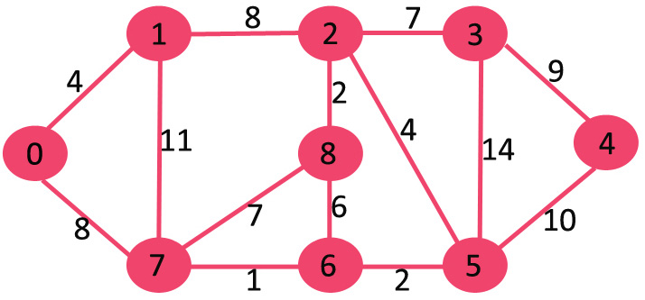

Kruskal MST
- Sort all the edges in non-decreasing order of their weight.
- Pick the smallest edge. Check if it forms a cycle with the spanning tree formed so far. If cycle is not formed, include this edge. Else, discard it.
- Repeat step#2 until there are (V-1) edges in the spanning tree.

union-find:
- find cycle: Union-Find Algorithm
- path compression
- by rank
// Naive implementation of find
int find(int parent[], int i)
{
if (parent[i] == -1)
return i;
return find(parent, parent[i]);
}
// Naive implementation of union()
void Union(int parent[], int x, int y)
{
int xset = find(parent, x);
int yset = find(parent, y);
parent[xset] = yset;
}
Let there be 4 elements 0, 1, 2, 3
Initially, all elements are single element subsets.
0 1 2 3
Do Union(0, 1)
1 2 3
/
0
Do Union(1, 2)
2 3
/
1
/
0
Do Union(2, 3)
3
/
2
/
1
/
0
union by rank
Let us see the above example with union by rank
Initially, all elements are single element subsets.
0 1 2 3
Do Union(0, 1)
1 2 3
/
0
Do Union(1, 2)
1 3
/ \
0 2
Do Union(2, 3)
1
/ | \
0 2 3
Path Compression
Let the subset {0, 1, .. 9} be represented as below and find() is called
for element 3.
9
/ | \
4 5 6
/ \ / \
0 3 7 8
/ \
1 2
When find() is called for 3, we traverse up and find 9 as representative
of this subset. With path compression, we also make 3 as the child of 9 so
that when find() is called next time for 1, 2 or 3, the path to root is reduced.
9
/ / \ \
4 5 6 3
/ / \ / \
0 7 8 1 2
class subset
{
int parent;
int rank;
}
// A utility function to find
// set of an element i (uses
// path compression technique)
int find(subset [] subsets , int i)
{
if (subsets[i].parent != i)
subsets[i].parent = find(subsets,
subsets[i].parent);
return subsets[i].parent;
}
// A function that does union
// of two sets of x and y
// (uses union by rank)
void Union(subset [] subsets,
int x , int y )
{
int xroot = find(subsets, x);
int yroot = find(subsets, y);
if (subsets[xroot].rank < subsets[yroot].rank)
subsets[xroot].parent = yroot;
else if (subsets[yroot].rank < subsets[xroot].rank)
subsets[yroot].parent = xroot;
else
{
subsets[xroot].parent = yroot;
subsets[yroot].rank++;
}
}
Kruskal
// The main function to construct MST using Kruskal's algorithm
void KruskalMST()
{
Edge result[] = new Edge[V]; // This will store the resultant MST
int e = 0; // An index variable, used for result[]
int i = 0; // An index variable, used for sorted edges
for (i=0; i<V; ++i)
result[i] = new Edge();
// Step 1: Sort all the edges in non-decreasing order of their
// weight. If we are not allowed to change the given graph, we
// can create a copy of array of edges
Arrays.sort(edge);
// Allocate memory for creating V ssubsets
subset subsets[] = new subset[V];
for(i=0; i<V; ++i)
subsets[i]=new subset();
// Create V subsets with single elements
for (int v = 0; v < V; ++v)
{
subsets[v].parent = v;
subsets[v].rank = 0;
}
i = 0; // Index used to pick next edge
// Number of edges to be taken is equal to V-1
while (e < V - 1)
{
// Step 2: Pick the smallest edge. And increment
// the index for next iteration
Edge next_edge = new Edge();
next_edge = edge[i++];
int x = find(subsets, next_edge.src);
int y = find(subsets, next_edge.dest);
// If including this edge does't cause cycle,
// include it in result and increment the index
// of result for next edge
if (x != y)
{
result[e++] = next_edge;
Union(subsets, x, y);
}
// Else discard the next_edge
}
// print the contents of result[] to display
// the built MST
System.out.println("Following are the edges in " +
"the constructed MST");
for (i = 0; i < e; ++i)
System.out.println(result[i].src+" -- " +
result[i].dest+" == " + result[i].weight);
}